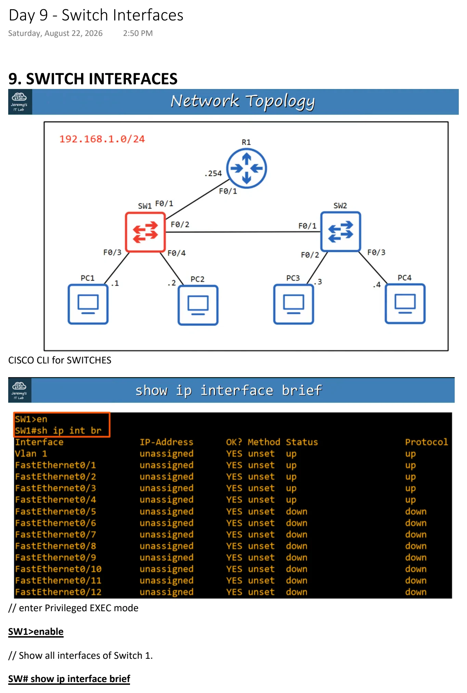
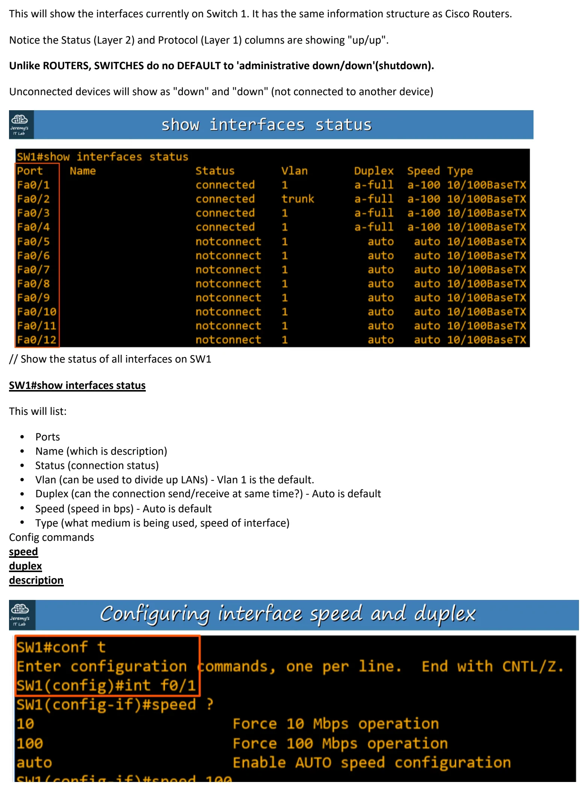
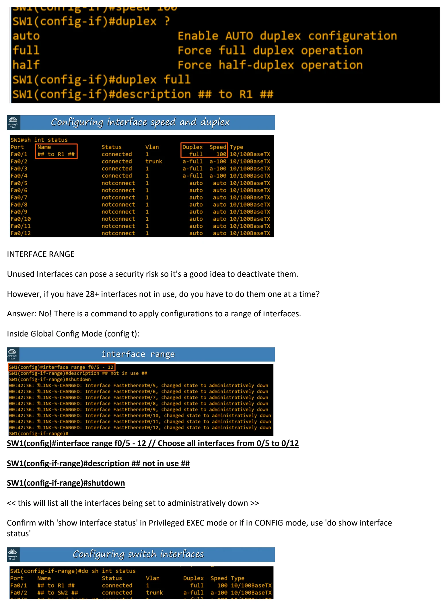
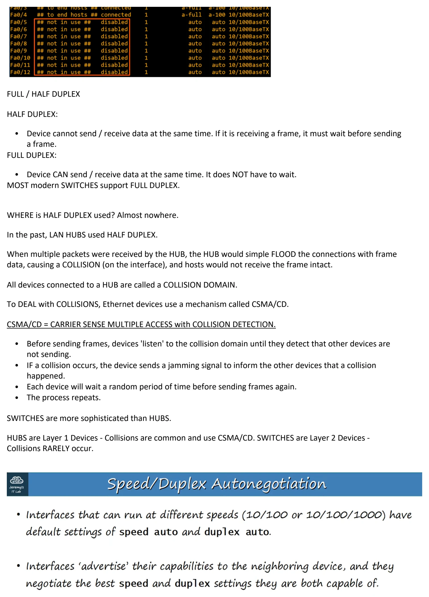
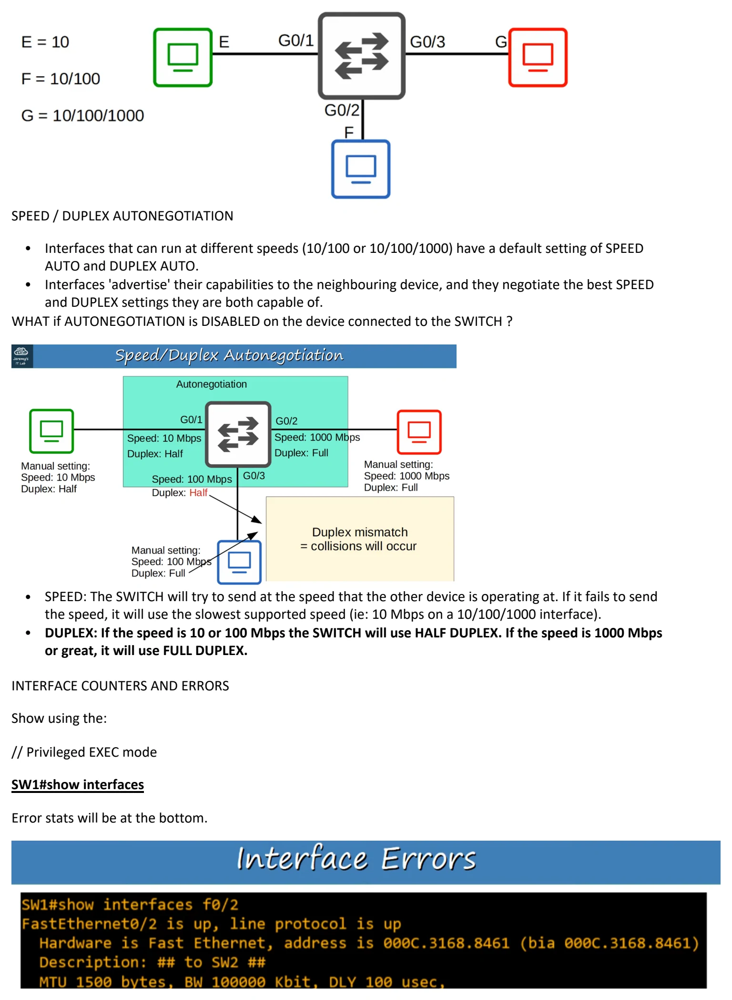
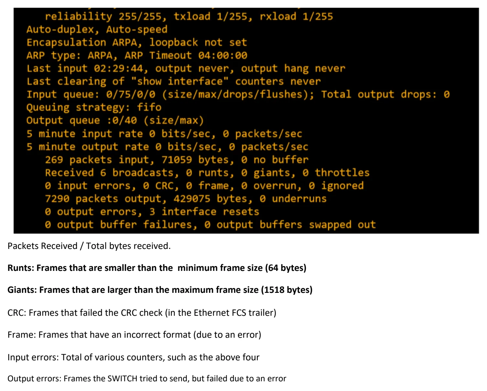

Day 09 / 63 · Network foundations
Switch Interfaces
Study notes based primarily on Jeremy’s IT Lab CCNA learning videos. Credit to Jeremy’s IT Lab for the source lessons and diagrams.
Switch Interfaces
Download original PDF





Text view — Switch Interfaces
Extracted from the original export. Diagrams and some formatting appear in the notes above.
Day 9 - Switch Interfaces Saturday, August 22, 2026 2:50 PM 9. SWITCH INTERFACES CISCO CLI for SWITCHES // enter Privileged EXEC mode SW1>enable // Show all interfaces of Switch 1. SW# show ip interface brief This will show the interfaces currently on Switch 1. It has the same information structure as Cisco Routers. Notice the Status (Layer 2) and Protocol (Layer 1) columns are showing "up/up". Unlike ROUTERS, SWITCHES do no DEFAULT to 'administrative down/down'(shutdown). Unconnected devices will show as "down" and "down" (not connected to another device) // Show the status of all interfaces on SW1 SW1#show interfaces status This will list: • Ports • Name (which is description) • Status (connection status) • Vlan (can be used to divide up LANs) - Vlan 1 is the default. • Duplex (can the connection send/receive at same time?) - Auto is default • Speed (speed in bps) - Auto is default • Type (what medium is being used, speed of interface) Config commands speed duplex description INTERFACE RANGE Unused Interfaces can pose a security risk so it's a good idea to deactivate them. However, if you have 28+ interfaces not in use, do you have to do them one at a time? Answer: No! There is a command to apply configurations to a range of interfaces. Inside Global Config Mode (config t): SW1(config)#interface range f0/5 - 12 // Choose all interfaces from 0/5 to 0/12 SW1(config-if-range)#description ## not in use ## SW1(config-if-range)#shutdown << this will list all the interfaces being set to administratively down >> Confirm with 'show interface status' in Privileged EXEC mode or if in CONFIG mode, use 'do show interface status' FULL / HALF DUPLEX HALF DUPLEX: • Device cannot send / receive data at the same time. If it is receiving a frame, it must wait before sending a frame. FULL DUPLEX: • Device CAN send / receive data at the same time. It does NOT have to wait. MOST modern SWITCHES support FULL DUPLEX. WHERE is HALF DUPLEX used? Almost nowhere. In the past, LAN HUBS used HALF DUPLEX. When multiple packets were received by the HUB, the HUB would simple FLOOD the connections with frame data, causing a COLLISION (on the interface), and hosts would not receive the frame intact. All devices connected to a HUB are called a COLLISION DOMAIN. To DEAL with COLLISIONS, Ethernet devices use a mechanism called CSMA/CD. CSMA/CD = CARRIER SENSE MULTIPLE ACCESS with COLLISION DETECTION. • Before sending frames, devices 'listen' to the collision domain until they detect that other devices are not sending. • IF a collision occurs, the device sends a jamming signal to inform the other devices that a collision happened. • Each device will wait a random period of time before sending frames again. • The process repeats. SWITCHES are more sophisticated than HUBS. HUBS are Layer 1 Devices - Collisions are common and use CSMA/CD. SWITCHES are Layer 2 Devices - Collisions RARELY occur. SPEED / DUPLEX AUTONEGOTIATION • Interfaces that can run at different speeds (10/100 or 10/100/1000) have a default setting of SPEED AUTO and DUPLEX AUTO. • Interfaces 'advertise' their capabilities to the neighbouring device, and they negotiate the best SPEED and DUPLEX settings they are both capable of. WHAT if AUTONEGOTIATION is DISABLED on the device connected to the SWITCH ? • SPEED: The SWITCH will try to send at the speed that the other device is operating at. If it fails to send the speed, it will use the slowest supported speed (ie: 10 Mbps on a 10/100/1000 interface). • DUPLEX: If the speed is 10 or 100 Mbps the SWITCH will use HALF DUPLEX. If the speed is 1000 Mbps or great, it will use FULL DUPLEX. INTERFACE COUNTERS AND ERRORS Show using the: // Privileged EXEC mode SW1#show interfaces Error stats will be at the bottom. Packets Received / Total bytes received. Runts: Frames that are smaller than the minimum frame size (64 bytes) Giants: Frames that are larger than the maximum frame size (1518 bytes) CRC: Frames that failed the CRC check (in the Ethernet FCS trailer) Frame: Frames that have an incorrect format (due to an error) Input errors: Total of various counters, such as the above four Output errors: Frames the SWITCH tried to send, but failed due to an error Day 9 - Switch Interfaces Saturday, August 22, 2026 2:50 PM 9. SWITCH INTERFACES CISCO CLI for SWITCHES // enter Privileged EXEC mode SW1>enable // Show all interfaces of Switch 1. SW# show ip interface brief This will show the interfaces currently on Switch 1. It has the same information structure as Cisco Routers. Notice the Status (Layer 2) and Protocol (Layer 1) columns are showing "up/up". Unlike ROUTERS, SWITCHES do no DEFAULT to 'administrative down/down'(shutdown). Unconnected devices will show as "down" and "down" (not connected to another device) // Show the status of all interfaces on SW1 SW1#show interfaces status This will list: • Ports • Name (which is description) • Status (connection status) • Vlan (can be used to divide up LANs) - Vlan 1 is the default. • Duplex (can the connection send/receive at same time?) - Auto is default • Speed (speed in bps) - Auto is default • Type (what medium is being used, speed of interface) Config commands speed duplex description INTERFACE RANGE Unused Interfaces can pose a security risk so it's a good idea to deactivate them. However, if you have 28+ interfaces not in use, do you have to do them one at a time? Answer: No! There is a command to apply configurations to a range of interfaces. Inside Global Config Mode (config t): SW1(config)#interface range f0/5 - 12 // Choose all interfaces from 0/5 to 0/12 SW1(config-if-range)#description ## not in use ## SW1(config-if-range)#shutdown << this will list all the interfaces being set to administratively down >> Confirm with 'show interface status' in Privileged EXEC mode or if in CONFIG mode, use 'do show interface status' FULL / HALF DUPLEX HALF DUPLEX: • Device cannot send / receive data at the same time. If it is receiving a frame, it must wait before sending a frame. FULL DUPLEX: • Device CAN send / receive data at the same time. It does NOT have to wait. MOST modern SWITCHES support FULL DUPLEX. WHERE is HALF DUPLEX used? Almost nowhere. In the past, LAN HUBS used HALF DUPLEX. When multiple packets were received by the HUB, the HUB would simple FLOOD the connections with frame data, causing a COLLISION (on the interface), and hosts would not receive the frame intact. All devices connected to a HUB are called a COLLISION DOMAIN. To DEAL with COLLISIONS, Ethernet devices use a mechanism called CSMA/CD. CSMA/CD = CARRIER SENSE MULTIPLE ACCESS with COLLISION DETECTION. • Before sending frames, devices 'listen' to the collision domain until they detect that other devices are not sending. • IF a collision occurs, the device sends a jamming signal to inform the other devices that a collision happened. • Each device will wait a random period of time before sending frames again. • The process repeats. SWITCHES are more sophisticated than HUBS. HUBS are Layer 1 Devices - Collisions are common and use CSMA/CD. SWITCHES are Layer 2 Devices - Collisions RARELY occur. SPEED / DUPLEX AUTONEGOTIATION • Interfaces that can run at different speeds (10/100 or 10/100/1000) have a default setting of SPEED AUTO and DUPLEX AUTO. • Interfaces 'advertise' their capabilities to the neighbouring device, and they negotiate the best SPEED and DUPLEX settings they are both capable of. WHAT if AUTONEGOTIATION is DISABLED on the device connected to the SWITCH ? • SPEED: The SWITCH will try to send at the speed that the other device is operating at. If it fails to send the speed, it will use the slowest supported speed (ie: 10 Mbps on a 10/100/1000 interface). • DUPLEX: If the speed is 10 or 100 Mbps the SWITCH will use HALF DUPLEX. If the speed is 1000 Mbps or great, it will use FULL DUPLEX. INTERFACE COUNTERS AND ERRORS Show using the: // Privileged EXEC mode SW1#show interfaces Error stats will be at the bottom. Packets Received / Total bytes received. Runts: Frames that are smaller than the minimum frame size (64 bytes) Giants: Frames that are larger than the maximum frame size (1518 bytes) CRC: Frames that failed the CRC check (in the Ethernet FCS trailer) Frame: Frames that have an incorrect format (due to an error) Input errors: Total of various counters, such as the above four Output errors: Frames the SWITCH tried to send, but failed due to an error Day 9 - Switch Interfaces Saturday, August 22, 2026 2:50 PM 9. SWITCH INTERFACES CISCO CLI for SWITCHES // enter Privileged EXEC mode SW1>enable // Show all interfaces of Switch 1. SW# show ip interface brief This will show the interfaces currently on Switch 1. It has the same information structure as Cisco Routers. Notice the Status (Layer 2) and Protocol (Layer 1) columns are showing "up/up". Unlike ROUTERS, SWITCHES do no DEFAULT to 'administrative down/down'(shutdown). Unconnected devices will show as "down" and "down" (not connected to another device) // Show the status of all interfaces on SW1 SW1#show interfaces status This will list: • Ports • Name (which is description) • Status (connection status) • Vlan (can be used to divide up LANs) - Vlan 1 is the default. • Duplex (can the connection send/receive at same time?) - Auto is default • Speed (speed in bps) - Auto is default • Type (what medium is being used, speed of interface) Config commands speed duplex description INTERFACE RANGE Unused Interfaces can pose a security risk so it's a good idea to deactivate them. However, if you have 28+ interfaces not in use, do you have to do them one at a time? Answer: No! There is a command to apply configurations to a range of interfaces. Inside Global Config Mode (config t): SW1(config)#interface range f0/5 - 12 // Choose all interfaces from 0/5 to 0/12 SW1(config-if-range)#description ## not in use ## SW1(config-if-range)#shutdown << this will list all the interfaces being set to administratively down >> Confirm with 'show interface status' in Privileged EXEC mode or if in CONFIG mode, use 'do show interface status' FULL / HALF DUPLEX HALF DUPLEX: • Device cannot send / receive data at the same time. If it is receiving a frame, it must wait before sending a frame. FULL DUPLEX: • Device CAN send / receive data at the same time. It does NOT have to wait. MOST modern SWITCHES support FULL DUPLEX. WHERE is HALF DUPLEX used? Almost nowhere. In the past, LAN HUBS used HALF DUPLEX. When multiple packets were received by the HUB, the HUB would simple FLOOD the connections with frame data, causing a COLLISION (on the interface), and hosts would not receive the frame intact. All devices connected to a HUB are called a COLLISION DOMAIN. To DEAL with COLLISIONS, Ethernet devices use a mechanism called CSMA/CD. CSMA/CD = CARRIER SENSE MULTIPLE ACCESS with COLLISION DETECTION. • Before sending frames, devices 'listen' to the collision domain until they detect that other devices are not sending. • IF a collision occurs, the device sends a jamming signal to inform the other devices that a collision happened. • Each device will wait a random period of time before sending frames again. • The process repeats. SWITCHES are more sophisticated than HUBS. HUBS are Layer 1 Devices - Collisions are common and use CSMA/CD. SWITCHES are Layer 2 Devices - Collisions RARELY occur. SPEED / DUPLEX AUTONEGOTIATION • Interfaces that can run at different speeds (10/100 or 10/100/1000) have a default setting of SPEED AUTO and DUPLEX AUTO. • Interfaces 'advertise' their capabilities to the neighbouring device, and they negotiate the best SPEED and DUPLEX settings they are both capable of. WHAT if AUTONEGOTIATION is DISABLED on the device connected to the SWITCH ? • SPEED: The SWITCH will try to send at the speed that the other device is operating at. If it fails to send the speed, it will use the slowest supported speed (ie: 10 Mbps on a 10/100/1000 interface). • DUPLEX: If the speed is 10 or 100 Mbps the SWITCH will use HALF DUPLEX. If the speed is 1000 Mbps or great, it will use FULL DUPLEX. INTERFACE COUNTERS AND ERRORS Show using the: // Privileged EXEC mode SW1#show interfaces Error stats will be at the bottom. Packets Received / Total bytes received. Runts: Frames that are smaller than the minimum frame size (64 bytes) Giants: Frames that are larger than the maximum frame size (1518 bytes) CRC: Frames that failed the CRC check (in the Ethernet FCS trailer) Frame: Frames that have an incorrect format (due to an error) Input errors: Total of various counters, such as the above four Output errors: Frames the SWITCH tried to send, but failed due to an error Day 9 - Switch Interfaces Saturday, August 22, 2026 2:50 PM 9. SWITCH INTERFACES CISCO CLI for SWITCHES // enter Privileged EXEC mode SW1>enable // Show all interfaces of Switch 1. SW# show ip interface brief This will show the interfaces currently on Switch 1. It has the same information structure as Cisco Routers. Notice the Status (Layer 2) and Protocol (Layer 1) columns are showing "up/up". Unlike ROUTERS, SWITCHES do no DEFAULT to 'administrative down/down'(shutdown). Unconnected devices will show as "down" and "down" (not connected to another device) // Show the status of all interfaces on SW1 SW1#show interfaces status This will list: • Ports • Name (which is description) • Status (connection status) • Vlan (can be used to divide up LANs) - Vlan 1 is the default. • Duplex (can the connection send/receive at same time?) - Auto is default • Speed (speed in bps) - Auto is default • Type (what medium is being used, speed of interface) Config commands speed duplex description INTERFACE RANGE Unused Interfaces can pose a security risk so it's a good idea to deactivate them. However, if you have 28+ interfaces not in use, do you have to do them one at a time? Answer: No! There is a command to apply configurations to a range of interfaces. Inside Global Config Mode (config t): SW1(config)#interface range f0/5 - 12 // Choose all interfaces from 0/5 to 0/12 SW1(config-if-range)#description ## not in use ## SW1(config-if-range)#shutdown << this will list all the interfaces being set to administratively down >> Confirm with 'show interface status' in Privileged EXEC mode or if in CONFIG mode, use 'do show interface status' FULL / HALF DUPLEX HALF DUPLEX: • Device cannot send / receive data at the same time. If it is receiving a frame, it must wait before sending a frame. FULL DUPLEX: • Device CAN send / receive data at the same time. It does NOT have to wait. MOST modern SWITCHES support FULL DUPLEX. WHERE is HALF DUPLEX used? Almost nowhere. In the past, LAN HUBS used HALF DUPLEX. When multiple packets were received by the HUB, the HUB would simple FLOOD the connections with frame data, causing a COLLISION (on the interface), and hosts would not receive the frame intact. All devices connected to a HUB are called a COLLISION DOMAIN. To DEAL with COLLISIONS, Ethernet devices use a mechanism called CSMA/CD. CSMA/CD = CARRIER SENSE MULTIPLE ACCESS with COLLISION DETECTION. • Before sending frames, devices 'listen' to the collision domain until they detect that other devices are not sending. • IF a collision occurs, the device sends a jamming signal to inform the other devices that a collision happened. • Each device will wait a random period of time before sending frames again. • The process repeats. SWITCHES are more sophisticated than HUBS. HUBS are Layer 1 Devices - Collisions are common and use CSMA/CD. SWITCHES are Layer 2 Devices - Collisions RARELY occur. SPEED / DUPLEX AUTONEGOTIATION • Interfaces that can run at different speeds (10/100 or 10/100/1000) have a default setting of SPEED AUTO and DUPLEX AUTO. • Interfaces 'advertise' their capabilities to the neighbouring device, and they negotiate the best SPEED and DUPLEX settings they are both capable of. WHAT if AUTONEGOTIATION is DISABLED on the device connected to the SWITCH ? • SPEED: The SWITCH will try to send at the speed that the other device is operating at. If it fails to send the speed, it will use the slowest supported speed (ie: 10 Mbps on a 10/100/1000 interface). • DUPLEX: If the speed is 10 or 100 Mbps the SWITCH will use HALF DUPLEX. If the speed is 1000 Mbps or great, it will use FULL DUPLEX. INTERFACE COUNTERS AND ERRORS Show using the: // Privileged EXEC mode SW1#show interfaces Error stats will be at the bottom. Packets Received / Total bytes received. Runts: Frames that are smaller than the minimum frame size (64 bytes) Giants: Frames that are larger than the maximum frame size (1518 bytes) CRC: Frames that failed the CRC check (in the Ethernet FCS trailer) Frame: Frames that have an incorrect format (due to an error) Input errors: Total of various counters, such as the above four Output errors: Frames the SWITCH tried to send, but failed due to an error Day 9 - Switch Interfaces Saturday, August 22, 2026 2:50 PM 9. SWITCH INTERFACES CISCO CLI for SWITCHES // enter Privileged EXEC mode SW1>enable // Show all interfaces of Switch 1. SW# show ip interface brief This will show the interfaces currently on Switch 1. It has the same information structure as Cisco Routers. Notice the Status (Layer 2) and Protocol (Layer 1) columns are showing "up/up". Unlike ROUTERS, SWITCHES do no DEFAULT to 'administrative down/down'(shutdown). Unconnected devices will show as "down" and "down" (not connected to another device) // Show the status of all interfaces on SW1 SW1#show interfaces status This will list: • Ports • Name (which is description) • Status (connection status) • Vlan (can be used to divide up LANs) - Vlan 1 is the default. • Duplex (can the connection send/receive at same time?) - Auto is default • Speed (speed in bps) - Auto is default • Type (what medium is being used, speed of interface) Config commands speed duplex description INTERFACE RANGE Unused Interfaces can pose a security risk so it's a good idea to deactivate them. However, if you have 28+ interfaces not in use, do you have to do them one at a time? Answer: No! There is a command to apply configurations to a range of interfaces. Inside Global Config Mode (config t): SW1(config)#interface range f0/5 - 12 // Choose all interfaces from 0/5 to 0/12 SW1(config-if-range)#description ## not in use ## SW1(config-if-range)#shutdown << this will list all the interfaces being set to administratively down >> Confirm with 'show interface status' in Privileged EXEC mode or if in CONFIG mode, use 'do show interface status' FULL / HALF DUPLEX HALF DUPLEX: • Device cannot send / receive data at the same time. If it is receiving a frame, it must wait before sending a frame. FULL DUPLEX: • Device CAN send / receive data at the same time. It does NOT have to wait. MOST modern SWITCHES support FULL DUPLEX. WHERE is HALF DUPLEX used? Almost nowhere. In the past, LAN HUBS used HALF DUPLEX. When multiple packets were received by the HUB, the HUB would simple FLOOD the connections with frame data, causing a COLLISION (on the interface), and hosts would not receive the frame intact. All devices connected to a HUB are called a COLLISION DOMAIN. To DEAL with COLLISIONS, Ethernet devices use a mechanism called CSMA/CD. CSMA/CD = CARRIER SENSE MULTIPLE ACCESS with COLLISION DETECTION. • Before sending frames, devices 'listen' to the collision domain until they detect that other devices are not sending. • IF a collision occurs, the device sends a jamming signal to inform the other devices that a collision happened. • Each device will wait a random period of time before sending frames again. • The process repeats. SWITCHES are more sophisticated than HUBS. HUBS are Layer 1 Devices - Collisions are common and use CSMA/CD. SWITCHES are Layer 2 Devices - Collisions RARELY occur. SPEED / DUPLEX AUTONEGOTIATION • Interfaces that can run at different speeds (10/100 or 10/100/1000) have a default setting of SPEED AUTO and DUPLEX AUTO. • Interfaces 'advertise' their capabilities to the neighbouring device, and they negotiate the best SPEED and DUPLEX settings they are both capable of. WHAT if AUTONEGOTIATION is DISABLED on the device connected to the SWITCH ? • SPEED: The SWITCH will try to send at the speed that the other device is operating at. If it fails to send the speed, it will use the slowest supported speed (ie: 10 Mbps on a 10/100/1000 interface). • DUPLEX: If the speed is 10 or 100 Mbps the SWITCH will use HALF DUPLEX. If the speed is 1000 Mbps or great, it will use FULL DUPLEX. INTERFACE COUNTERS AND ERRORS Show using the: // Privileged EXEC mode SW1#show interfaces Error stats will be at the bottom. Packets Received / Total bytes received. Runts: Frames that are smaller than the minimum frame size (64 bytes) Giants: Frames that are larger than the maximum frame size (1518 bytes) CRC: Frames that failed the CRC check (in the Ethernet FCS trailer) Frame: Frames that have an incorrect format (due to an error) Input errors: Total of various counters, such as the above four Output errors: Frames the SWITCH tried to send, but failed due to an error Day 9 - Switch Interfaces Saturday, August 22, 2026 2:50 PM 9. SWITCH INTERFACES CISCO CLI for SWITCHES // enter Privileged EXEC mode SW1>enable // Show all interfaces of Switch 1. SW# show ip interface brief This will show the interfaces currently on Switch 1. It has the same information structure as Cisco Routers. Notice the Status (Layer 2) and Protocol (Layer 1) columns are showing "up/up". Unlike ROUTERS, SWITCHES do no DEFAULT to 'administrative down/down'(shutdown). Unconnected devices will show as "down" and "down" (not connected to another device) // Show the status of all interfaces on SW1 SW1#show interfaces status This will list: • Ports • Name (which is description) • Status (connection status) • Vlan (can be used to divide up LANs) - Vlan 1 is the default. • Duplex (can the connection send/receive at same time?) - Auto is default • Speed (speed in bps) - Auto is default • Type (what medium is being used, speed of interface) Config commands speed duplex description INTERFACE RANGE Unused Interfaces can pose a security risk so it's a good idea to deactivate them. However, if you have 28+ interfaces not in use, do you have to do them one at a time? Answer: No! There is a command to apply configurations to a range of interfaces. Inside Global Config Mode (config t): SW1(config)#interface range f0/5 - 12 // Choose all interfaces from 0/5 to 0/12 SW1(config-if-range)#description ## not in use ## SW1(config-if-range)#shutdown << this will list all the interfaces being set to administratively down >> Confirm with 'show interface status' in Privileged EXEC mode or if in CONFIG mode, use 'do show interface status' FULL / HALF DUPLEX HALF DUPLEX: • Device cannot send / receive data at the same time. If it is receiving a frame, it must wait before sending a frame. FULL DUPLEX: • Device CAN send / receive data at the same time. It does NOT have to wait. MOST modern SWITCHES support FULL DUPLEX. WHERE is HALF DUPLEX used? Almost nowhere. In the past, LAN HUBS used HALF DUPLEX. When multiple packets were received by the HUB, the HUB would simple FLOOD the connections with frame data, causing a COLLISION (on the interface), and hosts would not receive the frame intact. All devices connected to a HUB are called a COLLISION DOMAIN. To DEAL with COLLISIONS, Ethernet devices use a mechanism called CSMA/CD. CSMA/CD = CARRIER SENSE MULTIPLE ACCESS with COLLISION DETECTION. • Before sending frames, devices 'listen' to the collision domain until they detect that other devices are not sending. • IF a collision occurs, the device sends a jamming signal to inform the other devices that a collision happened. • Each device will wait a random period of time before sending frames again. • The process repeats. SWITCHES are more sophisticated than HUBS. HUBS are Layer 1 Devices - Collisions are common and use CSMA/CD. SWITCHES are Layer 2 Devices - Collisions RARELY occur. SPEED / DUPLEX AUTONEGOTIATION • Interfaces that can run at different speeds (10/100 or 10/100/1000) have a default setting of SPEED AUTO and DUPLEX AUTO. • Interfaces 'advertise' their capabilities to the neighbouring device, and they negotiate the best SPEED and DUPLEX settings they are both capable of. WHAT if AUTONEGOTIATION is DISABLED on the device connected to the SWITCH ? • SPEED: The SWITCH will try to send at the speed that the other device is operating at. If it fails to send the speed, it will use the slowest supported speed (ie: 10 Mbps on a 10/100/1000 interface). • DUPLEX: If the speed is 10 or 100 Mbps the SWITCH will use HALF DUPLEX. If the speed is 1000 Mbps or great, it will use FULL DUPLEX. INTERFACE COUNTERS AND ERRORS Show using the: // Privileged EXEC mode SW1#show interfaces Error stats will be at the bottom. Packets Received / Total bytes received. Runts: Frames that are smaller than the minimum frame size (64 bytes) Giants: Frames that are larger than the maximum frame size (1518 bytes) CRC: Frames that failed the CRC check (in the Ethernet FCS trailer) Frame: Frames that have an incorrect format (due to an error) Input errors: Total of various counters, such as the above four Output errors: Frames the SWITCH tried to send, but failed due to an error